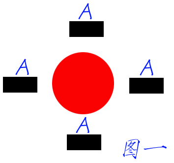
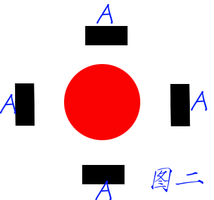

地球到底怎么公转，教科版是否有误！
#1 地球到底怎么公转，教科版是否有误！ 作者：有志青年 发表时间：2006-11-20 15:14:02
今天下午听了《昼夜现象的解释》一课，教材和教参中对“地球只公转，不自转”的猜想的理解我觉得有误差。
图一是教材和教参中认为的只公转不自转的模型图。

图二是我理解的模型图。

在我看来，地球如果只公转而不自转，那么参照物是太阳，那么所谓的地球自身不在转也应该是对于太阳来说的。
在教材和教参看来，如果地球只公转而不自转也会引起昼夜变化，只不过一年只有一昼夜而已。
如果我的观点成立，那么教材和教参中的关于是什么引起了昼夜现象，就可以落脚在地球的自转，而不是现在处理教材的方法，搞出一大堆的猜想，什么都可能，直到下课学生还是原有的认识。
至于有些老师说的学生可能不能理解，我的方法是：让学生绕着教室中间的桌椅跑一圈，很容易解决此问题。
原文发表于 2006-11-11
#2 Re:地球到底怎么公转，教科版是否有误！ 作者：news 发表时间：2006-11-21 10:29:14
地球怎么会不自转呢？？在它和太阳及整个太阳系的平衡中，它必须得自转！
#3 Re:地球到底怎么公转，教科版是否有误！ 作者：daiyue 发表时间：2006-11-29 23:48:07
教材的说法是正确的。要研究物体的运动，就必须从“参照物”中抽象出“参照系”的概念，所谓参照系，可以理解为相互保持静止的一组物体。所以仅仅以太阳为参照系是不恰当的。事实上，地球的自转不仅牵涉到日月升落，还引起了恒星在天球中的变动。应当把太阳以及这些恒星共同看成是参照系。
但是我不知道教材为什么要把昼夜变化问题搞那么复杂，甚至还和地球公转联系起来。
人是通过昼夜变化认识到地球在自转的，其中搞不清楚的问题是到底地球在动还是太阳在动。
在人类的认知史上，也从来没发生过昼夜变化是自转抑或公转引起的争论。
教材这样编排，反而把简单的问题搞复杂了。
#4 Re:Re:地球到底怎么公转，教科版是否有误！ 作者：有志青年 发表时间：2006-11-30 12:10:44
引用：
原文由 daiyue 发表于 2006-11-29 23:48:07 :教材的说法是正确的。要研究物体的运动，就必须从“参照物”中抽象出“参照系”的概念，所谓参照系，可以理解为相互保持静止的一组物体。所以仅仅以太阳为参照系是不恰当的。事实上，地球的自转不仅牵涉到日月升落，还引起了恒星在天球中的变动。应当把太阳以及这些恒星共同看成是参照系。
但是我不知道教材为什么要把昼夜变化问题搞那么复杂，甚至还和地球公转联系起来。
人是通过昼夜变化认识到地球在自转的，其中搞不清楚的问题是到底地球在动还是太阳在动。
在人类的认知史上，也从来没发生过昼夜变化是自转抑或公转引起的争论。
教材这样编排，反而把简单的问题搞复杂了。
这部分教材是学生自己通过已有知识猜测昼夜的变化是由于什么原因引起的，学生的猜测是在公转和自转的组合上。
教材的任务是帮助学生整理、筛选。
而教参上对学生认为只公转不自转的认识是：如果只公转不自转，那么一年只有一昼夜。
我理解的是，如果学生猜测地球只公转不自转：地球永远之后一面是白天，没有昼夜变化。